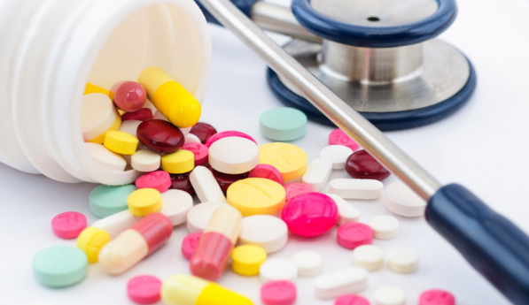
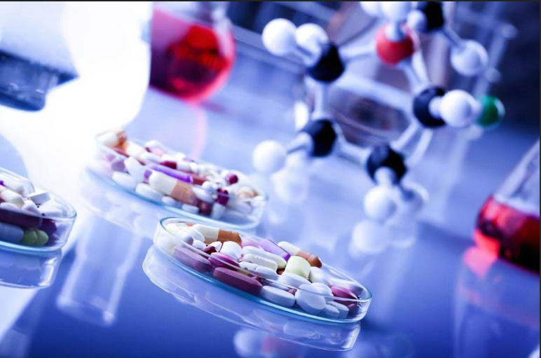

Pharmacy:
Pharmacy is the branch of healthcare that focuses on the safe and effective use of medications. Pharmacists are responsible for dispensing prescription medications, providing patient counselling, and ensuring the proper use of drugs.
Pharmacodynamics:
Pharmacodynamics refers to the study of how a drug affects the body and produces it's effects. It involves understanding the relationship between the concentration of a drug at its site of action and the resulting biological response.Pharmacology:
Pharmacology is the study of how drugs interact with biological systems. It involves understanding how drugs work, their mechanism of action and how they affect the body.
Pharmacokinetics:
Pharmacokinetics is the study of how the body processes a drug, including it's absorption,distribution, metabolism, and excretion. It helps determine how drugs are administered and how their concentration changes over time.Clinical Pharmacy:
Clinical Pharmacy involves direct patient care and medication management in a healthcare setting. Clinical pharmacists work closely with healthcare providers to optimize drug therapy for patients.